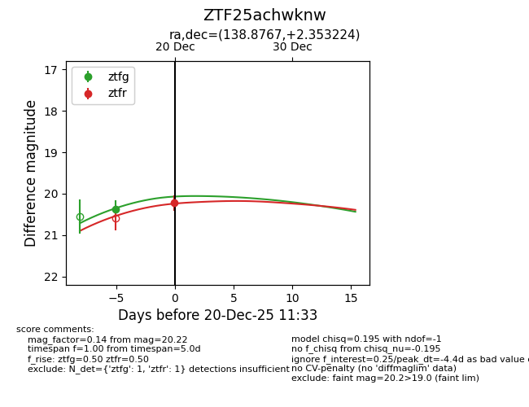
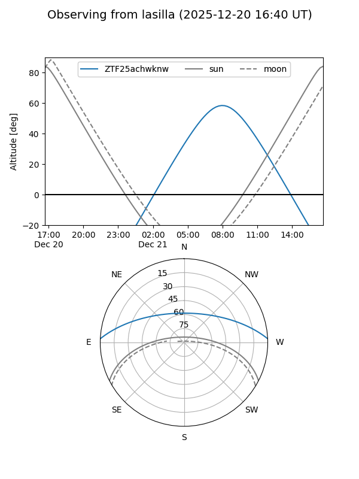
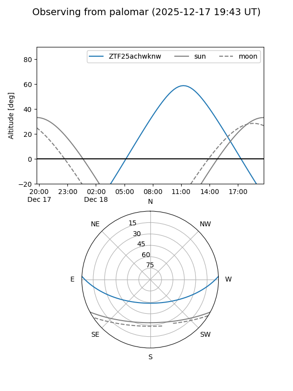

ZTF25achwknw
Target ZTF25achwknw at 2025-12-18 11:18
Aliases and brokers:
FINK: fink-portal.org/ZTF25achwknw
Lasair: lasair-ztf.lsst.ac.uk/objects/ZTF25achwknw
ALeRCE: alerce.online/object/ZTF25achwknw
alt names
ZTF25achwknw (ztf,fink_ztf)
Coordinates:
equatorial (ra, dec) = 138.8767,+2.35322
equatorial (HMS+DMS) = 09:15:30.41,+02:21:11.61
galactic (l, b) = (228.9075,+32.79396)
Photometry
last ztfg=20.38
1 ztfg detections
Lightcurve

Visibility


Additional plots